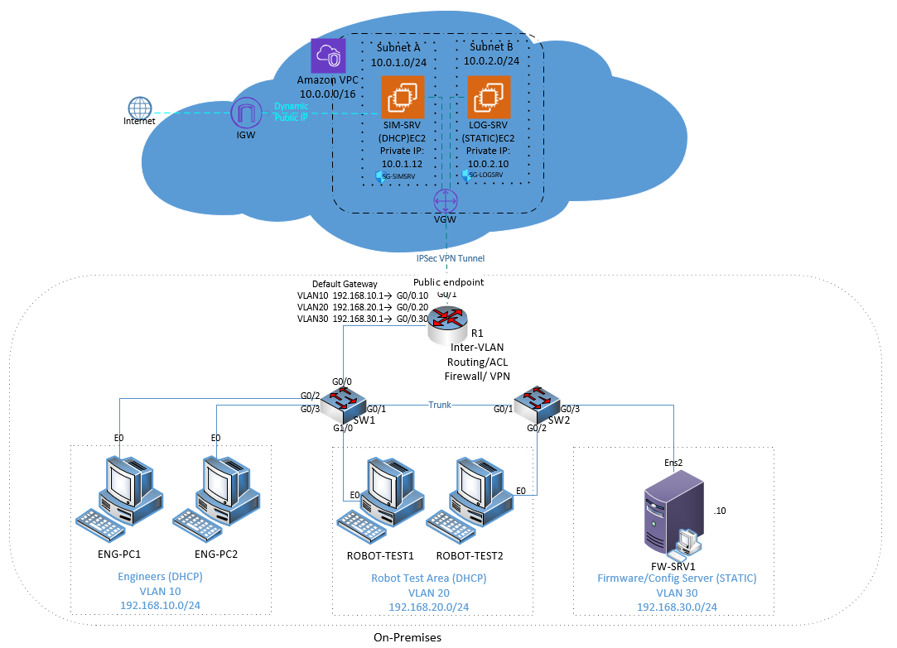
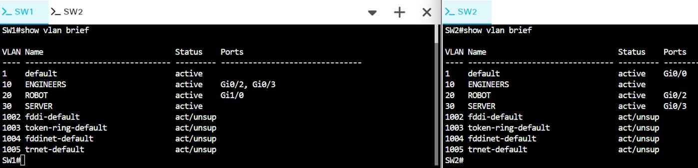
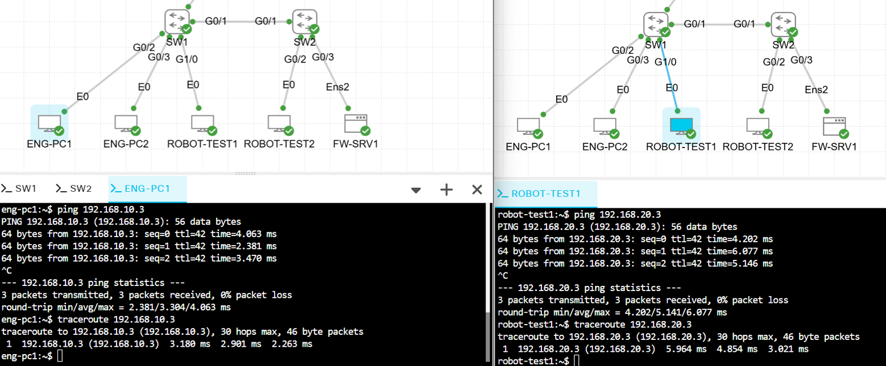
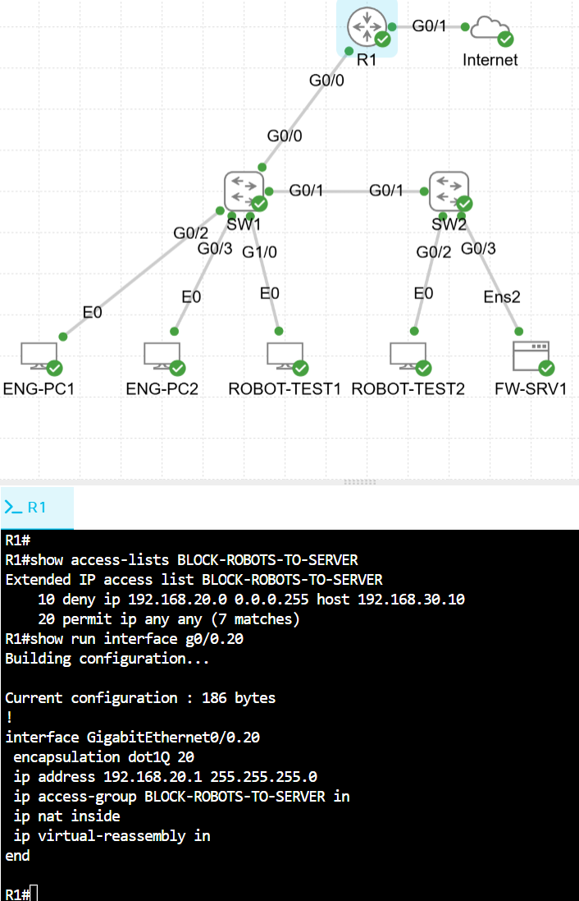
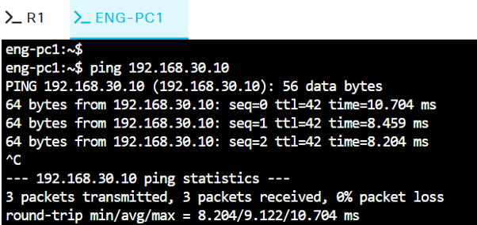
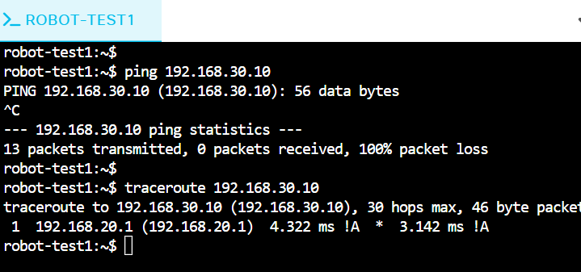
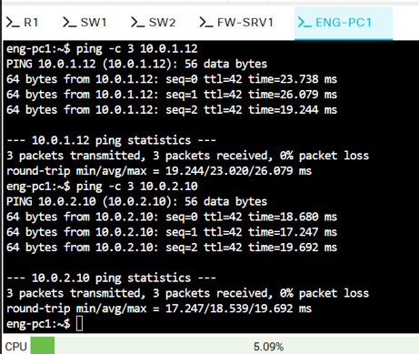
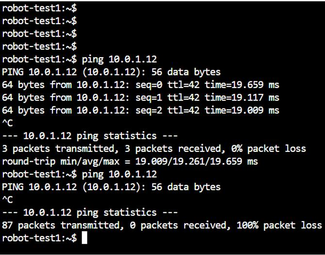
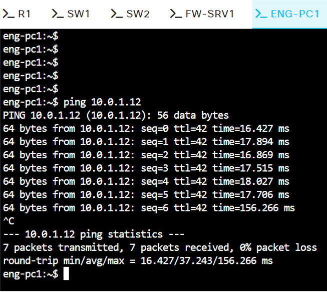

Project objective
GadgetMotion needed a private environment for prototype robot designs and firmware while still allowing approved systems to use AWS simulation and logging resources. I built the solution as a hybrid lab so the on-premises and cloud networks could communicate over an encrypted connection without placing protected systems directly on the public internet.
Architecture and segmentation
On-premises Cisco network
Two IOSvL2 switches carried three VLANs over an 802.1Q trunk. VLAN 10 supported engineering workstations, VLAN 20 contained robot-test systems, and VLAN 30 hosted the firmware/configuration server. Router R1 provided router-on-a-stick inter-VLAN routing, DHCP for the user VLANs, and ACL enforcement.
AWS network
The AWS VPC used a 10.0.0.0/16 address range with a simulation subnet and a log-analysis subnet. Route tables provided internal VPC routing, the simulation server used dynamically assigned addressing, and the logging server retained a static private address.
Hybrid connection
An IPsec site-to-site VPN connected R1 to an AWS Virtual Private Gateway. AWS route tables included the on-premises networks, and security groups extended the access policy across the hybrid boundary.
Eight validation areas
- VLAN and trunk segmentationVerified VLAN membership, access ports, the SW1–SW2 trunk, same-VLAN communication, and Layer 2 paths.
- DHCP and static addressingValidated DHCP pools for the engineering and robot VLANs while the firmware server retained a static address.
- Inter-VLAN reachability and ACLsAllowed engineers to reach the firmware server while denying the robot VLAN.
- AWS subnet segmentationConfirmed the VPC, two /24 subnets, route-table associations, and internal cloud routing.
- Cloud addressing and external routingChecked dynamic and static cloud addressing, Internet Gateway routing, and outbound connectivity.
- Cloud security-group behaviorTested allowed and denied communication between EC2 instances in separate subnets.
- IPsec VPN operationVerified tunnel status, ISAKMP and IPsec security associations, routes, packet counters, and bidirectional traffic.
- Hybrid network securityAllowed the engineering and server VLANs to reach the simulation server while blocking the robot VLAN at the AWS boundary.
Selected validation evidence
The screenshots below come from the functionality testing I performed in Cisco Modeling Labs and AWS. They show the configured VLANs, successful permitted traffic, intentional denials, and communication across the hybrid connection.








Results
- Verified VLAN membership, 802.1Q trunking, DHCP, static addressing, routing, and ACL placement.
- Confirmed permitted paths with successful replies and 0% packet loss.
- Confirmed intended denied paths with 100% packet loss.
- Validated VPC subnet routing, route-table entries, and security-group enforcement.
- Confirmed both VPN tunnels were operational and observed encrypted packet counters increase during testing.
- Demonstrated bidirectional connectivity between approved on-premises systems and AWS resources.
Troubleshooting work
- Learned that Cisco Modeling Labs required fetching each device configuration rather than downloading only the topology, preventing configuration loss between sessions.
- Diagnosed asymmetric ACL behavior when return traffic to the robot VLAN was denied on the inbound VLAN 20 subinterface.
- Determined the external endpoint presented through the CML NAT environment so the AWS customer gateway and VPN could be configured correctly.
- Checked route tables, tunnel status, ISAKMP and IPsec security associations, and packet counters when validating end-to-end reachability.
What I would improve next
- Add redundant routing and switching and test failover behavior.
- Centralize Cisco syslog, AWS VPC Flow Logs, and tunnel monitoring.
- Automate repeatable Cisco and AWS configuration while storing VPN secrets securely.